Okay, creé esto con tal de tener mis textos de mi libreta en un archivo de texto como podria ser
esta página, y luego poder leerlo en cualquier momento, tengo miedo sobre lo que pueda llegar a pasar realmente
no se que me depara el futuro con esto, pero creo que es una buena idea, y creo que podría ser muy útil para
ir viendo mi historia de vida desde hoy 12-1-24 y aparte de pensamientos lo usaré para notas
y todo ese tipo de cosas.
No soy tonto y se que en el futuro alguien leera esto, conociendome, sé que lo haré
Estoy haciendo o escribiendo un libro en donde estoy escribiendo uno de los capitulos mas tranquilos y donde tengan una relacion estable ethan y Emma, ethan revelara que solo utilizó a emma para crear un romance tragico en sus historias y cuando tuviese su libro escho se iria de la forma mas culera... q feo
Ya no quiero hacer nada. Espero que esta relación que tengo con Gabriela aún siga en pie, en verdad la amo...
No quiero hacer nada, no quiero hacer nada, no quiero hacer nada, no quiero hacer nada, no quiero hacer nada, no quiero hacer nada, no quiero hacer nada, no quiero hacer nada, no quiero hacer nada, no quiero hacer nada, no quiero hacer nada, no quiero hacer nada, no quiero hacer nada
Juego de simulación de streamer donde vas ganando espectadores, necesitas trabajar, comprar componentes de PC, puedes viajar, puede ser multijugador y puedes decorar tu apartamento
Me quiero matar. Amo a gabi, amo a mi familia pero prefiero realmente no amar, no sentir, ya sentí mucho, no me gusta. A veces necesitamos forzar el tiempo de introspección para saber que desiciones tomar y dedicarme mi tiempo
Hace unos dias tuve una crisis de ansiedad tremenda, por que le dije a una amiga (amiga de mi novia) que es una linda persona, pero en el momemento me senti presionado, no lo pense y dispare lo que realmente tenia que decirle. Le hice mencion sobre una inconformidad la cual tenía yo con ella, al hacerle mencion de mi incofnromidad la lastime a ella, y era obvio a mi parecer, solamente queria hacerselo saber, la incofnromidad que tanto hago mencoion es esto,
contexto: Ella no sabe hablar con las demas personas y no sabe hacer mas amigos y su unica amiga desde que entro a segundo de secundaria era literalemten mi novia, le hablaba a mas personas pero eran personas 'X' sin tanto valor en su vida como lo era gabriela, por que las demas personas a las cuales ella les hablaba eran personas muy doble cara y hasta las criticaba diciendoles "nacos" pero se comenzo a juntar con ellos una vez empeze a andar con gabriela, y muchas veces ella se juntaba en los recesos conmigo y con gabriela y a mi no me agradaba del todo por que no lograbamos tener una buena comunicaicon o no nos desarrollabamos bien en cuanto a la comunicacion.
como se lo dije fue algo directo y seco, frio, crudo de mi parte, y eso provoco que causara problemas, y eso, por no encontrar las palabras correctas, aveces siento que es necesario dejar de pensar tanto las cosas, por que en la vida estamos llenos de cosas en nuestra cabeza, metas, pendientes, tareas y aveces la lista se extiende de mas, que aveces nos olvidamos de pensar en nosotros mismos, siento que yo hubiera pensado primero en mí y hubiera solucionado todas mis incofnromidades o por lo menos intentar solucionar la mayoria de mis inconformidades conmigo mismo, siento que hubiera dicho las palabras correctas en momentos adecuados, es decir, tenia tantas cosas en la mente
que soy capaz de jurar que no podia pensar con claridad ninguna de esas cosas, me sentia tan abrumado que no podia pensar tan siquiera en como decir unas simples palabras. Pero como eh dicho muchas veces EL HUBIERA NO EXISTE.
se me ocurrio ponerle unas cuantas caracteristicas a ethan:
Ethan es un chico con cabello negro, alto (1.87m), color de piel color piel :u, le gusta ayudar a la gente, es escritor, en su pasado era un camarografo urbano, tiene un pasado algo no tan agradable y es alguien muy controlador, quiere utilizar a emma para su historia de romance con ella, para luego ganar dinero con eso.
Emma, chica baja (1.57m) le gust hacer postres, mas que nada pasteles, ayuda a la gente y muchas veces se distrae muy facilmente o no sabe lo que pasa a su alrededor.
Sarah, amiga de la infancia de Emma
Le eh querido hablar a mosnerrat, amiga de gabriela pero solamente seria forzar la amistad. La vi pasar y solo vi su cara de asco, eso quedara grabado en mi cara de por vida aun que yo no lo quiera asi. La verdad esta sensacion nunca la habia tenido, nunca le habia dado asco a alguien
hay una cancion de milo j que me gusto mucho que se llama Domingo y la imagen del algum es distinto, solo era por aparicion en live set de milo, per ahora aca, asi, la imagen de milo es de el con los brazos estirados con alas tiene muchos 1 en su cara por su album 111.
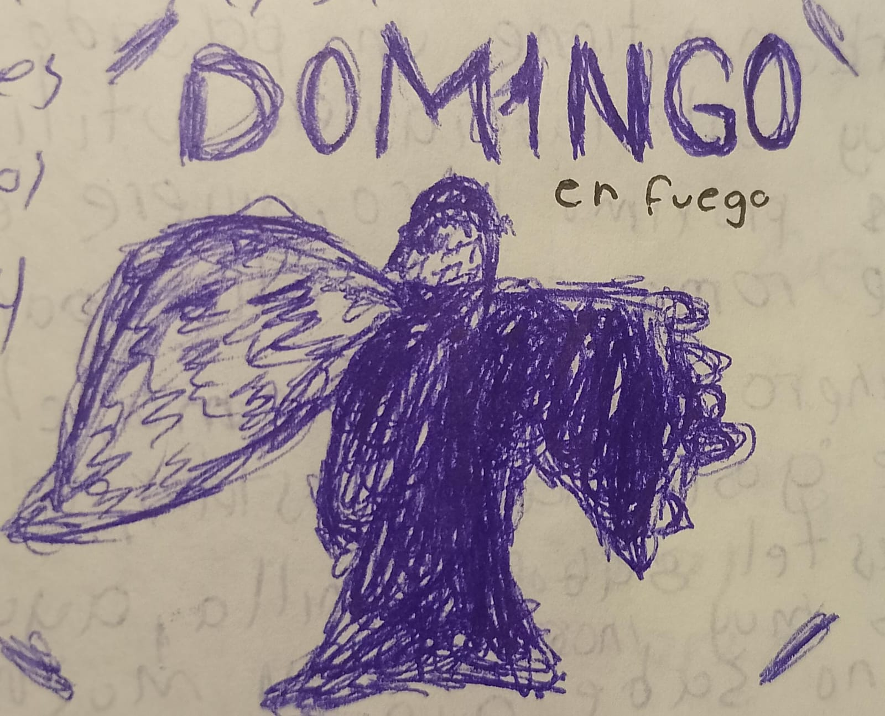Me gustaria entrara a la preparatoria. Queria hacer un video sobre mi miedo por ir a la preparatoria, es muy estresante y pues me da miedo no poder tener tiempo de nada y eso me inquieta, me frustra el echo de suponer o asumir que cuando entre a la preparatoria no tendre tiempo de nada, y bue, igual ya quiero salir de la escuela.
ahora mismo son las 12:56 p.m y salgo a la 01:10 p.m y no dormi nada la noche pasada. quieo que el ultimo dia aun que sea el ultimo, pueda ver ese dia a gabriela por ultima vez y decirle lo mucho que la estimo por ultima vez saliendo de la escuela, decirle lo mucho que la amo
A veces simplemente suelo evitar el conflicto, lo sé por que cuando veo que se va a generar uno o se esta generando uno, callo a todos, quiero tener el mayor silencio posible solo par ano escuchar al conflicto, solo verlo, y digo verlo por que es mejor ver el caos que escucharlo, a veces ver a una persona morir no duele tanto, pero ver y oir como pide ayuda, como agoniza, escuchar sus gritos, lamentos, suplicas, simplemente son cosas que desgarran el alma
simplemente es tanto ruido que no puedes pensar en nada mas que en el conflicto y a veces se te queda en la cabbeza durante bastante tiempo, esos sonidos del conflicto... desgarran
"construye el avion mientras lo vuelas"
No lo sé, muchas veces tengo esta idea de que el estres es un arte desastroso, una lluvia de ideas que podemos usar a nuestro favor, para crear, para pensar un poco en nosotros, para tranqiulizarnos en tanta turbulencia que tiene la marea, aun que, pienso que no debemos de ser ignorates de nosotros mismos y tomemos en cuenta que el estres obviamente causa molestias, tanto fisicas como mentales
esto lo estoy escribiendo estando justamente en clases, y me acorde de esta nueva moda que se impone en internet sobre "romper las reglas" nos eque prendenden realmente lograr con eso, es decir, si estan ahi es por algo, no se pusieron solamente de adorno, o simplemente no quieren seguir las normas sociales cuando se te dan o cuando se te da la oportunidad de hacer algo que otras personas no se lo permiten no lo aprovechas del todo sabes?, asi hay gente
que intenta imponer estas ideas de romper las normas, cuando realmente lo que estan haciendo es no aprovechar todas las oportunidades que se les otorga. Hablo de esto por que recorde un video y escuche a un amigo que se llama Rooney decir "Para que estudio esta materia si nisiquiera la voy a ver en mi carrera" pero yo creo que esta mal esa forma de pensar por que podemos aprender siempre y eso no esta mal, es mas, nos volvemos hasta mas cultos.
Dios mio... hoy viernes gabriela me corto, es horrible, horrible, horrible, hoy todo el santo dia no quise ver, no tuve los lentes para nada, nisiquiera para ver el pízaaron,literalmente llevo dias hablando con ella sobre sus papas y sus inconformidades, pero ella no queria hablar conmigo, yo insistia, intentaba ayudarla de alguna manera, intente, lo intente, en serio que lo intente, le dije a mi psicologa si le podia hacer terapia aun que sea por mensajes a gabriela ella acepto y le pagaba el dinero que yo no tenaia a mi psicologa con tal de que ella se sintiera bien, a ella no le gustan los psicologos y sus padres son tan sobre protectores y tan limitantes...
en fin, creo que ya paso todo, tratare de estar en paz.
fui a morelia, le compre un collar de mariposa, le compre un libro, el libro que ella tanto queria pero sus papas no le dejaban tener, le compre un POU.. dos pou tristes, le di mi confianza, le di mi corazon, lo destrozo, fue tan, cortante, tan fria, tan de repente, me hizo sufrir, ya me lo veia venir, pero por que me hizo esperar tanto tiempo la tormenta y el huracan cuando la marea me estaba sofocando? en fin, no importa ya, todo termino, espero poder seguir vivo, no quiero vivir, no quiero pensar, no quiero saber nada de nadie, no quiero nada, no quiero nada, no quero nada, no quiero nada, no quiero nada, no quiero nada, no quiero nada, no quiero nada, no quiero nada, no quiero nada, no quiero Nada, NADA, NO QUIERO SABER ABSOLUTAMENTE NADA DE NADIE NI DE PUTAS NADA ALV, MAATENME DE UNA PERRA VEZ, NO PUEDO SEGUIR AQUI, NO PUEDO SEGUIR ASI, no puedo seguir...br
no puedo dejar de pensar Tanto odio, tanto amor para esto, tanto tiempo, tantos sentimientos, todo esto para que al final pasara lo que yo sabía que iba a pasar. A pesar de todo, nunca le dejé de querer. Siempre la quise, siempre la querré. No me importa cuánto daño me cause el querer. Yo mismo me ahogo aferrándome a algo que quizás ya no exista. Tantas cosas, nueve veces, que no es fácil soltar todo eso. El proceso por el cual conocí a Gaby fue maravilloso. Pude conocer a alguien muy guapa, muy linda, y con una personalidad... no lo sé. Ella es única. Ella es como todo ser humano. Tiene patrones. Salía de su casa a las 6.37 y pasaba cerca de la mía a las 6.45 de la mañana. Siempre por mi misma calle. Siempre nos sentábamos en el mismo lugar. Siempre nos conocíamos un poco más. Hasta que un día nuestra rutina cambió. Sus patrones cambiaron. Su amiga ya no es más su amiga. Llega más tarde a la escuela y ya no nos sentábamos en el mismo lugar. Yo sentía que nuestra conexión no era la misma. Dejó de mandarme mensajes y... entendí. Yo pensaba que se estaba acercando el momento en el que ella me iba a dejar e intenté no creer eso con "las relaciones evolucionan". "Ella también es humana". "Quizás tiene mucha tarea". "Está ocupada". Todo este tipo de cosas para que al final mi suposición fuera verdadera. A veces me odio a mí mismo. Ella perdió y ganó a la vez. Le di muchas cartas y regalos, mucha comprensión, apoyo y hasta me puse de acuerdo con mi psicóloga para que Gaby hablara con ella. Todo para esto. De igual forma siento que la saturé de cosas ya que cuando me cortó me dijo varias cosas. Ahorita lo recopilo. También la vi comportándose de una forma muy rara. Sus patrones cambiaron por completo. Aún más. Ya casi no me quería hablar. Aún no olvidaré todo lo que me dijo. Todo el mes que se comportó raro y aparte cuando me cortó me dijo. "No quiero estar contigo". "Me causaste muchos problemas". "Eres un problema". "No es por ti. Es por mí". "No te puedo dar algo que no tengo". "Lo pensé mucho". "Estoy decidida". "No me importa lo que digas". Todo eso dijo y lo que más me dolía es que no me lo dijo desde antes. Me decía te quiero falsamente desde muchísimo antes y yo realmente la amé. De verdad la quise mucho y que me dijera esas palabras. No lo sé. Ya no quiero nada pero a la vez lo quiero todo. Estuve soñando en una almohada pero sentía frío sin su abrigo. Estaba viendo si sacaba un poema de eso pero terminé sacando otro. He estado sacando reels últimamente. Estoy haciendo poemas, recitándolos y usándolos para hacer reels y tiktoks. Estoy cansado. No he dormido nada. Me duele todo. Qué sueño.
Qué feo es sentir un vacío que no va a llenarse Por más que uno lo intente Ojalá retrocediese el tiempo pa' poder abrazarte Y encararte de frente No eras santa ni perfecta Pero seguías siendo grande Tengo cosas pa' contarte Puertas para abrirte Pensé que eras diferente Vuelve a mí como hiciste antes No quiero mentirte Mi corazón quedó hecho en partes Y, en parte, por lo que hiciste Pero te extraño, aunque no haga bien Ni a vos, ni a mí, ni a nadie Dentro de poco,
te quiero ver Aunque duela Aquel día domingo Esperé a que vengas Noto que no eras para mí Esos ojos lindos Me hicieron de piedra Te extraño Aunque no te haga feliz
bueno ayayayayayayayayayay xd
Realmente hace ya bastante tiempo no hago nada parecido a esto, ni a dibujos ni nada de eso y nada, solo queria pasar el rato en clase, estaba aburrido con una grandes ganas de, ya sabes, aburrirme haciendo algo, asi que hice este dibujo javier:
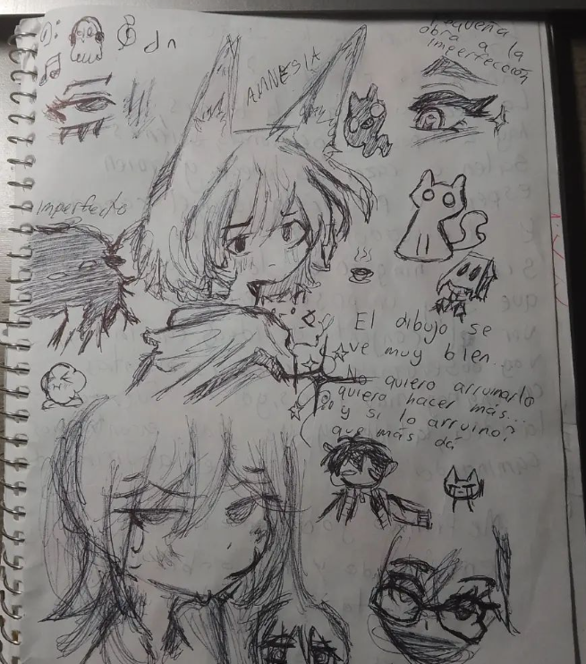Bueno como estoy a punto de entrar a vacaciones me eh centrado mas que nada en mi canal de youtube asi que no el eh dedicado tanto tiempo a otras cosas, me siento orgulloso de lo que eh logrado por ahora, me gustan mucho mis resultados hasta el momento y siento que puedo segir mejorando, ultimamente eh tendio mas que nada pensamientos de introspeccion y siento que puedo mejorar mi lectura leyendo mas y tambien eso me ayudaria a poder escribir muchsimo mas rapido pero tambien teniendo coherencia en lo que escribo al igual que estar bien gramaticalmente, me gusta mucho exporar este tipo de mundos sobre la redaccion de distitnas cosas y todo eso, de echo me acorde que tengo un amigo que se llama Atta, me ah llamdo para poder jugar con el ajedrez, hablando de juegos asi, recorde que a mi me gusta mucho el jugar tetris, hace poco hice un record personal dentro de el, que es colocar mas piezas sin morir en el intento.
bueno ya estuve jugando con atta un rato y la verdad es que ah mejorado bastante para todo este tiempo en el cual no se ah estado conectando y yo tampoco, me gusta como va avanzando, dejando eso de lado, eh querido hacer y escribir mas frases al igual que estar leyendo para mejorar mi manera de escritira al igual la manera en como pienso ya que creo que es una manera en la cual puedo estar un poco mas en paz con lo que ah pasado recientemente con gabriela, aun que mira javier, la verdad ya, superala, quizas la veras de vuelta en el futuro o conoceras a alguien mejor, a alguien que de verdad te valore y de verdad te quiera, ella nisiqueira te decia un maldito "te quiero" y ni aun que le suplicaras que te lo dijera, nunca te lo dijo, solamente te dio un regalo y decia algo de te quiero, pero... meh, al final no termino nada bien, encontraras a alguien mejor que ella, ella al parecer no queria nada contigo y lo sabias desde un inicio.
Aun asi te aferraste como siempre a querer, pareces una puta pulga, hasta que no te quitan no te vaz, me das asco javier
Aqui tengo unas cuantas ideas para algunas frases
Eh estado avanzando bastante con mis frases y con mis poemas, me siento orgulloso al igual que eh estado motivado y avanzando con todo esto de mi canal de youtube, le mes pasado lo estuve mejorando y planificando lo de youtube, por ahora esta dando frutos y muy buenos, quiero seguir, no quiero parar, quiero seguir nadando, haciendo videos, programando, eso me hace olvidar de mis problemas, eso srecuerdos tan... aterradores, me gusta lo que hago, en serio que no se que podria hacer sin ellos
a mi libro lo nombro "la naturaleza de los sueños?" o "aromas del placer?"
escuche por ahi que la idea no llega si la buscas.
Yo creo que hay 2 tipos de personas, quienes salen a cazar la idea, y quien esperan a cazar la idea. el cazador y el pescador, pero no, yo no soy niguno de ellos, creo que yo soy mas como un paseante, camino hasta ver el conjunto de ideas, camino y voy observando las cosas, mientras camino, hay mas ideas, yo no fuerzo la idea, la y dea y yo nos encontramos caminando en la ruta del aburrimiento
me llego una idea justamente y no la tuve que buscar, "me tienes jodidamente enamorado y no sabes lo emocionante y escalofriante que es eso" fuaaa el diablo
Realmente tengo ganas de clavarme un cuchillo en el estomago y retorcerlo lentamente hasta quedarme sin vida, no quiero vivir, realmente no, quiero matarme pero, no lo se, soy muy cobarde. Yo mismo me ahogo en mis problemas,no se como desconfiar de la gente que no conozco, no se si lo estoy haciendo bien, no se si sirvo para las cosas, simplemente y siempr etengo la cara de lo que hago NO ME GUSTA, recuerdo cuando me levante para participar aquella vez en clase de quimica y desde ahi no me gusta mi cara, nisiquiera le habia prestado atencion hasta que alejandro en la clase de quimica dijo "ahi va, el cara de diarrea", no me dio risa, me molesto pero no le tome mucha importancia en ese momento, solamente se me vino a la mente una idea de lo que pude haber dicho en ese momento
pude haberlo agarrado y sofocarlo con mis dos manos para enseguida golpearlo mientras lo seguia sofocando, diria que no lo odio pero a veces no me gusta que me dice o que le dice a las demas personas, es decir, no me molesta cuando lo hace en forma de juego cuando todos estan tomandose algo no tan en serio, pero el todo se lo toma a juego, es muy directo y dice cosas que no deberia de decir, habla de mas... ¿yo hablo de mas?. El pareciera que no tuviera conciencia de lo que dice, luego cuando yo estaba con Elena y la agarre sangoloteandola por que me emocione por algo, el paso por mi lado y le dijo "che rarita" tambien me molesto, pero no es suficiente como para darle en su madre, a veces solamente quiero decirle "mira alejandro, callate por que siempre tienes algo que decir, asi que cierra el oscico o si quieres te lo digo como el niño retrasado que eres, te mama andar cagando el palo a cada rato, che estupido"
y luego cuando abraze a gustavo por que su novia se habia peleado con el alejandro se le ocurrio decir "esos raritos que, se andan besando" y solo le dije "te quieres unir o que pedo" y logre lo que queria, incomodarlo, como digo, el siempre tiene algo que decir. Luego a luz elena le cuento casi todo, simplemente me hace sentir mal por que cuando no le quiero contar algo me amenaza o algo y no me gusta que haga eso, por que me obliga a contarle algo que yo no quiero contarle a nadie, quiero dibujar algo de Omori.
Cuando te vi, me gustó tu cabello, tus ojos, tu sonrisa.
Cuando te conocí, no tuve más remedio que volverme poeta,
porque no había forma de describirte con una sola palabra.
No me enamoré de tu cuerpo, me enamoré de tu alma,
del amor tan profundo que solo el arte comprende.
Porque no hay cosa más hermosa en este mundo
que la forma en que un ser humano desprende... serotonina,
al descubrir una mirada, al encontrarse con un rostro
que para los demás parece tan normal,
pero que para mí es un arte barroco.
Una charla contigo se convierte en un vals de palabras,
y cada mínimo contacto es un terremoto
que no destruye, pero que no esperabas.
Crea un alboroto por dentro,
tantos cambios que llevan a lugares desconocidos,
a sueños guajiros.
Cuando te vi, me pareciste perfecta,
pero cuando te conocí, descubrí que no lo eras.
No era correcto clasificarte con barreras,
porque eres tantas cosas, tanta bondad, tanto talento.
Parece irreal, parece que miento,
pero en verdad, así lo siento,
así te siento.
El filo de mi cuchillo es muy fino, tengo metida la idea de que si no lo hago, no sirvo, mirando mi cuchillo me puse a pensar...
tuve metida esta idea de que si no lo hacia no...
me puse a reflexionar del por que vivo
La reiteración de lo que era morir en vida llegaba a mi mente y decidí buscar, buscaba, buscaba, buscaba, buscaba, buscaba, buscaba... 8 en punto. Primero la sala. No está solo en la mesita, ni el café, tampoco encima del sillón. No estaba encima del sillón, ni los sillones individuales que flanqueaban la lámpara. 8 con 5. Busco sobre la mesa del comedor o las sillas que lo rodean. Nada. 8 con 15. En la cocina busco sobre la superficie a un lado de la estufa y sofre en la mesita donde se desayuna, come o cena cuando no hay visitas. Nada. 8 con 20. En la recámara busco encima de esta, sobre el escritorio o en alguno de los cajones o debajo. Nada. 8 con 30. En el baño busco alrededor del lavabo, sobre la taza y el piso. Nada. 8 con 45. Regreso a la sala, muevo los cojines del sillón. Largo. Dos para sentarse y dos para recargarse. Meto la mano entre los costados de los sillones individuales con un cojín para recargarse
y el cojín del asiento cosido a los costados. Sí. Nada. 9 con 15. Busco bajo de la mesa y sillas del comedor en el camino de mesa y debajo de los flores que decoran el centro de éste. 10 con 20. Regreso a la cocina, busco donde se guardan las tazas y vasos, los platos hondos y planos y debajo del fregadero donde van las ollas. En el cajón de los cubiertos, de los tuppers, de los sartenes, dentro del refri, del horno y nada. 11 con 30. Regreso a la recámara, busco detrás de la puerta del closet, saco las playeras y suéteres, abro los cajones debajo y saco calcetines, traje de baño, ropa térmica, abro la otra puerta, corrediza, saco la ropa colgada y busco dentro de los bolsillos de los pantalones, chamarras, sacos y camisas y nada. Entonces quito la colcha, cobijas y sábanas debajo de la cama. La jalo para ver del otro lado y quito el cuchón para asegurarme de que no esté allí y no está. Debo de asegurarme que no esté debajo.
Paso las páginas de cada libro en el librero con 62 en total con un promedio de 300 páginas en total cada uno y nada. Unas 5 de la mañana. Abro el closet de blanco, saco las cobijas, sábanas, toallas, toallitas y toallotas. Busco en los juegos de mesa y adentro de las cajas de ajedrez, Bayamón, Conecta 4. Monópoli, Turista, Club y Risk. En la parte superior del closet donde se guarda la cantidad de documentos, cuartilla de nacimiento, Curp, pasaporte, visa, certificados de primaria, cursos y metas junto con las fotos, dibujos y cartas y nada. 4.15 de la mañana. Voy al cuarto de lavado. Voy y me asomo a un lado, detrás y dentro de la lavadora, sobre el lavadero, y debajo de éste, donde se guardan rolls. Repuestos de diversos tipos de jabones, de barra en polvo y líquido para manos, platos, ropa, pisos, baños y metálexos hidrolados. Pinol, varnish, cera para los pisos, de madera y aceite para las puertas que rechinan.
Destapo y vacío los contenedores de cada uno, con el fin de asomarme a fondo de los recipientes y nada. 6.30 de la mañana. Abro la cena y vacío las cajas, cajitas y cajotas, bolsas, bolsitas y bolsotas, de pasta, arroz, harina, azúcar, sal, nueces, almendras, arándanos, cacahuates, semillas de girasol, chía, pepitas y otros. Y otros productos de granel. Frascos, botes y botellas de vinagre, de aceite de oliva virgen y extravirgen, canela, curcuma, cala, momo, paprika, pimienta, jengibre, tumillo, clavo, anís, perijil, albahaca y otras especies deshidratadas y nada. 9.40 de la mañana. Regreso a la sala y saco el relleno y golpeo los fondos de los cojines, dos para respaldos y dos del asiento del sillón largo y los respaldos de cada sillón individual. Arranco la costura de los asientos de estos dos y más o menos los resortes expuestos con el fin de no dejar espacios sin revisar, los dejo con las patas volteando hacia el techo donde levanto la mirada y...
...lo encuentro.
Traté de volar demasiado cerca del sol y mis alas se derritieron, caí hasta abajo y me quemé...
- icaro y el sol.
Me siento hasta abajo y ahora solo me queda volver a subir
Para escribir tengo que instalarme en el vacio, ese vacio donde existo intuitivamente... donde extraigo sangre.
Reciliencia
Resignificaciona
Tengo muchas ganas de escribir a maquina
No estar bien, esta bien
Pense en lo que me dijo mi psicologa, que me aprendiera a expresar, que me dejara fluir, que dejara fluir mis sentimientos. me habia dicho eso. entonces me eh convertido en alguien dependiente al dolor, creo que sin el dolor no puedo tener otros sentimientos
opcion 1: preparatoria oficial numero 68
opcion 2: CCT 15EBH0169T
Quiero hacer un libro sobre hawaii part 2
es un re album y creo que quedaria perfecto para un libro, pero mejor en otra pagina, tambien quiero anotar coordenadas de minecraft
coordenadas java: Aldea -893 64 661
vivir es acordarse de olvidar, idea -- > sentimiento (subconciente | sueño) -- > Actuar
Basta, solo siento que pierdo el tiempo, solamente quiero saber que me pasa, sabes lo peor? que ya se que me pasa, no es falta de compromiso, solo me hago la vida muy compleja, solo es hacer las putas cosas. estoy viendo una planta de nuestra terraza, esta muriendo, mi papa hace muchos años habia plantado una rosa, ahora se murio y esta floreciendo una mas, una rosa, solo una planta mas, el cactus que toque un dia que estaba hablando con amitiel que fue hace como unos 2 años o 1, ahora se esta poniendo naranja, veo la carretera, la mesa con polvo, veo macetas sin Nada
"No me gustan los dibujos que me salen mal, apenas hago el boceto y cuando se que me va a salir mal, mejor lo dejo, las calcetas que tengo ahora mismo son muy comodas, habia sido buena idea haberle dado a gabi mi sudadera y toda esa mierda? no lo se, tengo que hacer tarea si no quiero ir peor en este trimestre" eso lo anote, no se por que no lo anote aqui, es raro, xd, tiene mas texto pero se me hace raro no haberlo escrito en su momento aqui, quizas estaba demaciado oucpado pensando en la tarea de ese momento y en gabi, hay mucho texto en esa pagina sobre tareas que me dejaron
DESCUBRANME SI PUEDEN JAJSJAJSJADJSHDJH
Estuve esperando por siempre, tendré suficiente tiempo para pasar mi tiempo solo. Solo. Porque el amor puede arder como un cigarro en tu piel, sin dejar de nada. Pero ten presente, de acuerdo a la experiencia, que tan solo se odia lo querido. El amor que te profeso es ser más puro, mujer. Hay golpes que el destino da sin compasión. No sé qué tienen tus ojos, no sé qué tiene tu boca, que dominan tus antojos. Y mi sangre vuelve loca. Hay golpes que el destino da sin compasión. El amor que te profeso es ser más puro, mujer. Si hubiera una fuerza imparable para llevarnos de vuelta a donde estuvimos, siempre volvería a hacerte feliz. El tiempo solo es una ilusión para darle sentido a lo vivido. Solo la quiero a ella. La que promete filosofías, apologías y besos del paraíso. Sobreanalizar puede hacer que las montañas parezcan más grandes de lo que realmente son. Sé que tienes miedo, yo también tengo miedo. Pero enfrentemos el amor juntos, porque solo lo quiero sentir contigo. No te supe valorar cuando me di cuenta tuve que... Yo elijo con qué veneno envenenarme. El amor es una de las peores maldiciones. Aprendiste a amar porque fuiste amado o fuiste amado por saber amar. No te supe valorar, pero cuando me di cuenta, tuve que dejarte volar. Yo podía elegir qué espina pisar, pero Dios me hizo entender que cualquiera me puede lastimar. La única consecuencia que te puedo asegurar si agarras una rosa, es que te vas a morir. La única consecuencia que te puedo asegurar si agarras una rosa, es que... Si me amas es la única... Si me amas las únicas consecuencias que te puedo asegurar es que soy como una rosa llamativa y bella. Pero las heridas por parte de mis espinas no van en la piel, van en el corazón del mal. Si más me ames, serás quien perderá. Si me amas las únicas cosas que te diré es que mi amor es una rosa llamativa y bella. Pero mis espinas causan no dolor en la piel, sino en el corazón del alma. Yo no conozco el mundo, el mundo me conoce a mí.
Esta libreta me ha dado un gran rato, pero está empezando a romperse de la parte trasera. Cada libreta en la que escribo, creo que voy a hacer lo mismo. Cada libreta nueva será una etapa, o mejor dicho, será un conjunto de etapas y pensamientos e ideas en un cuaderno distinto. Pienso según escribiendo hasta que me canse. Cierto, también empecé una nueva etapa en mis publicaciones de Instagram en donde... Escribo más frases que antes, pero ahora ya no las escribo en mi cuaderno, ahora son digitales. Escribí un poema que dice así. Cada vez que te metes en mi mente, no puedo parar de pensarte. Pareces una isla que por más que intente, no podré conquistarte. Pero ¿para qué conquistarte cuando puedo amarte? Habitarte. Tengo presente de que llegará el momento de abandonarte. No intento lastimarte. Créeme querida, que jamás podré olvidarte. O no solamente poemas, también pensamientos como... Cierro mis ojos y estoy dormido soñando en que aún no me he rendido. También estaba pensando en que esta libreta es como si le contara las cosas que me han pasado a mi yo del futuro. Esta parte de atrás que se rompió de mi cuaderno, quizás lo repare. El cuaderno es una parte de mí, y si lo dejara por lo menos así, sin intentar repararlo, sería como dejar una herida abierta. En cambio, si lo reparo, sería como intentar sanar lo que sea que le haya pasado. Pero aún así, aceptando que sea roto. Pero no me descuido. Aunque ahí siga la cicatriz, la herida estará sanando. No se ahogará, y si se vuelve a abrir, abrirá peor. Pero estoy dispuesto a tarde o temprano volverlo a sanar, aunque sé que me llegará a romper. Pues...
No me siento acurrucado por la luna por más que quiera. Ella no lo intenta. El tiempo me sofoca. Solamente quiero que me ahogue en la eternidad. Estoy desesperadamente buscando la serenidad. Ya no deseo la superioridad. Sin ella no hay más que un poema frío lleno de tristeza y desesperanza. Una persona desea, pero una persona anhela. Mi corazón no sé por qué no se acaba de mermar. Mi ocaso se fue y comienza a llover. Camino por la calle desorientado a la esquina a mitad del otro lado. No importa nada. Todo está nublado.
No me suelen gustar los cumpleaños y menos si son mios, pero mis subscriptores y etc me trataron bastante bien, no lo negare, y me gusto al igual que pepper lo hizo, me canto las mañanitas :D
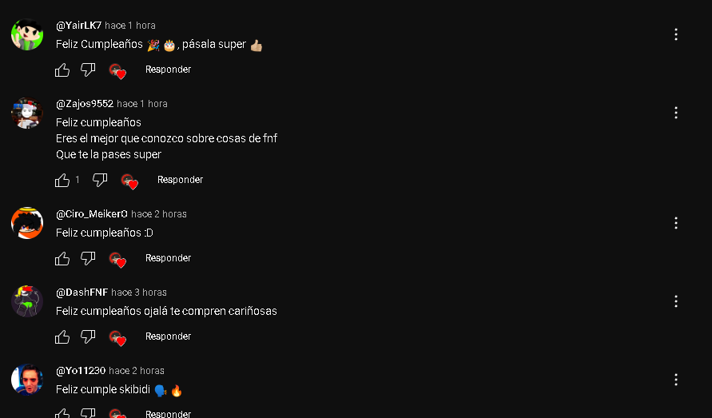
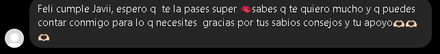
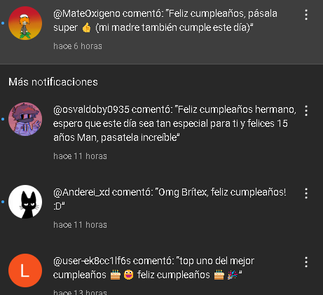
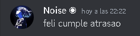
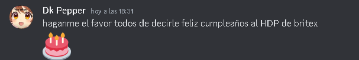
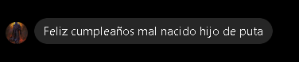
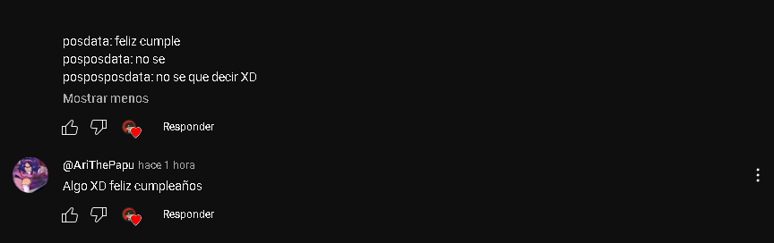
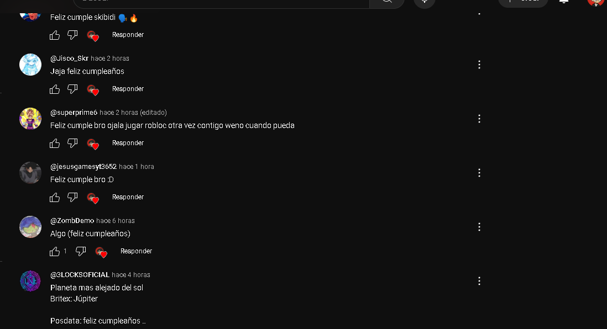
Con pepper me puse a reflexionar sobre esto y la verdad disfruto mucho hablar con el, conversamos sobre esto:
Ok, hace días ya no escribí en esto. Dentro de nada voy a entrar a la preparatoria. Y me compré una libreta nueva. La que tengo ahora no me sirve, la voy a usar solamente para anotaciones sobre tareas. Estoy escribiendo esto desde la página, desde mi código. Toda esta parte que no se ve en el navegador, estoy escribiéndolo. Lo veo y me pone a pensar. He dejado una etapa atrás. Esa libreta la guardaré. Sin mi pasado, no puedo saber quién voy a ser en un futuro. Me he comprado una nueva libreta. Me he conseguido una nueva etapa. Y sé que todo irá mejor porque se aplicó todo lo que he conocido, todo lo que he aprendido durante todo este tiempo. Todo lo que tengo plasmado, todo ese pensamiento de esa libreta, si lo aplico ahora en esta nueva etapa a la cual voy a cruzar en mi vida. Si lo plasmo, si mi pensamiento lo plasmo, puedo mejorar como persona. Y eso me agrada. Me gusta esa forma de pensar. En mi nueva libreta escribí un pensamiento sobre mi ex novia. Dice:
me endulzaste los oídos,
me arrancaste las venas,
conociste mis demonios y te alejaste en silencio,
perversa.
Si no ibas a quedarte,
¿por qué me desnudaste el alma?
Hoy en la mañana, estuve pensando. ¿Qué es lo que haré en la preparatoria? ¿Qué temas nuevos conoceré? ¿Qué personas conoceré? Hoy en la mañana, conocí a alguien. Bueno, no conocí a alguien, sino que la vi. Estaba viéndome alrededor cuando nos estaban asignando nuestros grupos cuando llegamos a la preparatoria. Y cuando me terminaron de asignar mi grupo... Bueno, antes de eso yo estaba muy nervioso. Cuando nos asignaron nuestros grupos, vi a una chica a la cual me llamaba la atención desde que llegamos, literalmente. Solamente la vi entrar, y fue tipo, ojalá me toque con ella. Y adivina qué, querido diario, o lo que sea que sea esta cosa, me tocó con ella. Me sentí raro. Dije, no se lo han equivocado, ojalá no, ojalá se quede aquí. Es muy guapa. Bueno, nos pasaron a nuestros salones, y solo vi cuando entró ella a un salón del primero 2 y dije, ah bueno, está bien. Pues ella va en ese salón, ¿no? Y ya después se metió de vuelta al salón del primero 1, porque ese salón me designaron a mí. Y solamente vi cómo se sentó. Y la vi sonriendo. Tiene una sonrisa muy linda. Y me llamó la atención también por su sudadera. Su sudadera de anime. Dije, ok, bueno, pues ya podemos tener un tema en común. Y me interesó. Me llamó la atención. Dije, qué curioso. Me senté al lado de ella, con tal de poderle hablar, pero me dio mucha pena, tan siquiera hablarle. No sabía cuál podría ser su reacción. Después nos cambiaron de lugar. Y ya. No le pude hablar. Se quedó casi hasta enfrente. Y ya. Y ya me quedé hasta atrás. Y conocí a más personas. Conocí a Cris, Fátima y Miguel. A Miguel le gusta a Kino, como a mí me gusta aquino. Aquino, así. Y Cris es alguien muy amable y muy social. Y Fátima es amiga de Cris. Y ya. Eso es todo lo que paso hoy. Conocí a más personas. Y los maestros, pues ya sabes. Las materias siempre. Los maestros lo que hacen cuando vas llegando a una escuela. Lo mismo de siempre.
Le dije a Chris que me gustaba Karina. Chris en realidad se llama Ashley. Y le dije sobre mi interés sobre Karina. Me animé a hablarle. La tipa se llama Karina. Y es muy buena gente. Casi no habla. Me interesa qué puedo conocer de ella. ¿Quién es ella? ¿Quién será? ¿Quién será? Me gusta cómo se ve. Me gusta cómo viste. Me gustan sus gustos.
He conocido a Sakarina como persona. Hemos hablado por teléfono, hemos tenido nuestras conversaciones, y al parecer también le intereso. Hemos hecho llamadas, han sido muy divertidas por la noche, y me gusta, me gusta, en serio que me gusta. Hicimos una llamada hace poco y se sincero mucho, se estaba quedando muy dormida, y simplemente es algo tan genial y fantástico conocer a alguien nuevo. Es decir, me gusta, me gusta, no se como explicarlo, pero no lo se, simplemente me gusta. Descubrí más de ella, y no se si sea buena idea ya declarármela. La conocí hace como una semana, imagínate. Bueno, supe de su existencia hace como una semana, o dos, o no se, pero me tiene loco, me tiene... me trae todo pendejo. Yo quería concentrarme en mis estudios, y mi mamá me decía, no quiero que tengas novia, porque es un distractor, concéntrate mejor en la escuela. Pero es inevitable que teniendo a ella presente, a Karina, Karina Itzel, es un bonito nombre. También tiene lentes. Ahora que lo recuerdo, hoy me tomó una foto a escondidas, te la mostraré.
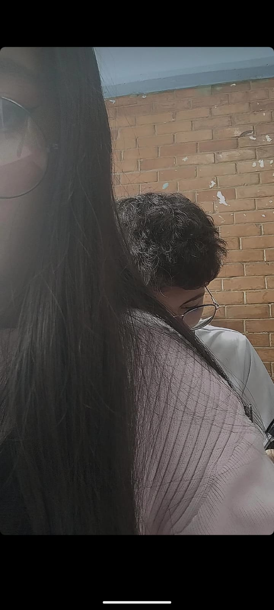Lo siento. El día de ayer me le declaré. No, no pude. Fue mucha emoción. Y aparte de la emoción, ya se veía muy preocupada. En sus notas ponía cosas como... Es lovebombing. Y afirmaba a cada rato que era lovebombing. Y era en sus notas en Instagram. Y yo estaba hablando de mí. Y ella era muy distante. Es decir, yo la abrazaba todos los días. Pero un día la noté muy distante. Y dije, ¿qué pasa? No me decía nada. No me decía nada. Es más, hablábamos por cartitas. Y me le declaré en una de esas... Cartitas, porque... Te lo contaré en orden cronológico. Me desperté, me fui a la preparatoria, todo normal. Y ese día, en sus notas, lo primero que vi fue que era lovebombing. Yo ya sabía que era lovebombing, pero me hice... Tonto. Muy pendejo. Y le mandé un mensaje contestándole la nota diciendo que era lovebombing. Y ella me explicó, ¿no? Estábamos en clase de Cultura Digital, si no mal recuerdo. Sí, Cultura Digital. Cuando me contestó. No, saliendo de la clase de Cultura Digital fue que me contestó que era lovebombing. Solamente me envió una captura de la definición del doble. Y yo dije, ah, bueno. Aún así yo ya lo sabía. Y después cambió la nota más tarde a algo que afirmaba ella. Que era lovebombing. Antes era como pregunta, ahora lo afirmaba. Y dije, de seguro está pensando que yo le estoy haciendo lovebombing. Que yo le estoy haciendo lovebombing. Y nada que ver, realmente. Yo la amo. Y eso que todavía no somos nada, o sea... Oh, qué rara es, pero me gusta mucho. Y ya. Y... Y solamente empezamos a hablar por cartitas en donde inició una conversación. Dijeron los orientadores que nos iban a cambiar de lugar. Ella se sentaba enfrente de mí, yo me sentaba atrás de ella. Y no me quería separar de ella en absoluto, para nada. Quería estar con ella. Quiero estar con ella. Atrás de ella. Para, pues, platicar y hacer ahí cosas, ¿no? Pero... Bueno, hablamos por cartitas donde decían esto. Pim, pam, pum. Y ya. Y en una de esas cartas... Arrancó una hoja de mi cuadernito y se la entregué. Donde me declaraba hacia ella. Le decía que me gustaba. Pero se la di, enseguida nos cambiaron de lugar. Le dije, oye Cali, toma. Y la carta simplemente era una declaración donde le decía que me gustaba. Y a la salida, ella me dijo también. Tú también me gustas. Y fue lo más emocionante. Fue algo épico. Simplemente no olvidaré ese día. Es hermosa. Ella es hermosa. Me encanta.
Y ya dejé de escribir en mi libreta. Me gusta escribir. Pero no sé por qué dejé de escribir en la libreta. Ya pasó un tiempo. Uno de octubre ya. Somos novios. Ya vamos a cumplir un mes. El 9 de septiembre me le declaré. Ya es uno de octubre. Ya. Ya un mes. Y ya dejé de escribir en mi libreta. Me gusta escribir. Pero no sé por qué dejé de escribir en la libreta. Ya pasó un tiempo. Uno de octubre ya. Me le declaré. Ya es uno de octubre. Ya. Ya un mes. Ya casi un mes. Qué emocionante. Qué rápido pasa el tiempo. Qué... Qué miedo a veces da el tiempo porque pasa demasiado rápido. Espero poder durar con ella bastante tiempo. Mucho tiempo. Demasiado tiempo. La quiero a ella. La amo a ella. Hemos vivido varias experiencias como por ejemplo... Me ha dado regalos. Le he dado muchos dibujos. No tengo fotos de ellos. Pero sí tengo fotos de sus regalos. Y también me ha dado galletitas. En los recesos. Y es tipo wow. Cuando me estoy moviendo de hambre me sirve mucho. Aunque muy me da pena recibirle la comida así de la nada. A Connie me gusta. Me gusta cómo actúa. Me gusta sus ojos. Sus lentes. Cómo se maquilla. Me gustaría conocerla sin maquillaje. Es hermosa ella. Es buenísima. Me encanta. Me manda fotos de ella. Y vídeos de ella y sus amigas y etcétera. Sus familiares. Me encanta eso. Que me mande fotos así. Con mucha confianza. ¿Qué más se puede decir? Lo siento. Ya hace mucho no tomo este hábito de vuelta. De escribir. En fin. A Karina yo la aprecio mucho. No quiero que se olvide de mi vida. Tengo un miedo intenso. Y pareciera una obsesión pero en serio. La miedo que se separa de mí. Si se puede la quiero tener toda mi vida. Ya le he contado mis planes al futuro. Mis planes. Yo quiero ser un buen padre. Ese padre que yo no tuve. Lo quiero ser yo. No quiero ser un padre que permita a todos sus hijos. Pero quiero ser un padre que les enseñe a sus hijos. Cómo poner límites. Cómo darse a respetar. Cómo respetar. Le he contado todo ese tipo de cosas. Pero yo quiero ser un padre que les enseñe a sus hijos. Cómo poner límites. Cómo darse a respetar. Cómo respetar. Le he contado todo ese tipo de cosas. A Karina. En serio. Tiene unos ojos muy bonitos. Una boca. Unos labios. Hermosos. Sus orejitas. Su pancita. Sus manitas. Sus lentes. Su cara. Cuello. Cabello. Todo. Sus piernas. Absolutamente como me encanta de ella. No puedo parar de pensar en ella. Simplemente la amo. No creo que haga falta darle mil significados a la palabra te amo. Porque esa palabra ya los abarca. Y es más. No solamente la amo. Creo que es algo trascendental. No se queda solamente en un simple te amo. Aunque tiene muchas inseguridades por su pasado. Yo aún la quiero. Espero poderla quitar esas inseguridades. Quiero ser ese hombre el cual no la haga llorar. Si la hago llorar, que sea por algo bueno, por favor. No quiero volver a ver la cara de alguien llorando por mi culpa. O alguien diciéndome que le doy asco por algo que no le gustó de mí. Quiero verla bien. Aunque no siempre se pueda. Y en sus momentos malos quiero llorar con ella. Quiero estar para ella. Quiero estar con ella. Quiero estar con ella. Y en sus momentos malos quiero llorar con ella. Quiero estar para ella. Quiero estar con ella.
El día de ayer, Karina me puso una pregunta. Me planteó algo. Me hizo preguntas, me cuestionó. No de la manera mala, sino de la manera buena, sino para conocerme más. Es interesante, le he dicho que la mente de las personas, porque así lo veo yo, son magníficas. Grandes. Galaxias. Planetas. Pero... Pero estos últimos días yo me he estado sintiendo mal. Terriblemente mal. No me siento suficiente para mi novia. No me siento suficiente para mí. No quiero seguir haciendo videos para YouTube. Ya no los hago. Ya no ido a nadar. Ya no programo. Solamente programo y sigo programando para este documento, toda esta página que he estado haciendo durante todo este año. Quiero simplemente... dejar de existir. Dejar de estar aquí. Pero no se puede eso. Quiero terminar alguna vez con todo esto. En fin. Ese no es el punto. Ese no es el tema. Karina también ha estado pasando unos días malos. Y totalmente la entiendo. Sabes, somos personas. Cambiamos constantemente. Karina me planteó una pregunta. La cual es causante de sus pequeñas, grandes ansiedades. Ataques de ansiedad. Me ha dicho. Me ha preguntado. ¿Quieres a las personas porque realmente las quieres? ¿Quieres a las personas porque realmente las quieres? ¿O las quieres porque quieres conocer más su forma de pensar? Y me puso a pensar un buen rato. Es decir. Mi forma de pensar sobre eso. Llegar a la conclusión. Mi forma de pensar sobre eso es. No voy a querer a nadie. Si no quiero saber su forma de pensar. Pero tampoco me interesa la forma de pensar de alguien que no quiero. Entonces ahí es como un duelo. Por así decirlo. Si los divides. Porque una cosa no es nada si no se complementa de la otra. Entonces es como algo interno que podría llegar a detener yo. Ella me gusta. A ella yo la quiero. Me interesa tanto su forma de pensar. Tanto su forma de querer. Tanto todo lo que ella tiene. Sus características. Para esto tenemos que subdividirlo en muchas partes. Y tener una idea. Y tener una idea. Y tener una idea. Y tener una idea. Para esto tenemos que subdividirlo en muchas partes. Y tenemos que. Que tomar en cuenta muchos aspectos porque si lo dejamos solamente. Querer. Y saber la forma de pensar de alguien. Se queda en el aire. Es muy general. Entonces tendríamos que ser más específicos en ese aspecto con todo eso. Eso es lo que yo le dije. Y Karina solamente estuvo escuchándome. Realmente. Le dije que si no me interesara su forma de pensar no la querría. Una cosa lleva de la mano a la otra. Si solamente la quisiera ni siquiera le preguntaría como es que piensa. O ni siquiera me interesaría la forma en la que ella piensa. Sus sentimientos me importarían solamente. Sus sentimientos hacia mí. Sus sentimientos. Solamente eso me interesaría. También como se ve. Y ya. Es todo. Más sin embargo yo quiero conocerla más. Pero si solamente quisiera conocerla más no la estaría queriendo. Yo quiero conocer más de su pasado. Su forma de pensar. Cómo es que se formó hasta ahora. Me interesa saber de ella. Y me interesa porque la quiero. No puedo querer a alguien si no me interesa su forma de pensar. Y no me puede interesar la forma de pensar de alguien si no quiero a ese alguien. No podemos admirar a las personas solamente por ser ellos. Sino que hay algo detrás. Queremos saber de su pasado. Queremos saber cómo están ahí. O las miramos a las personas por cómo llegaron hasta ahí. Las queremos. Ya sea por... Bueno, esto ya se divide en muchas partes de cómo sea nuestra manera de pensar. O hasta cómo queremos a las personas. Ya sea en el ámbito familiar, en amigos, pareja, siendo fan de otra persona. Y le puse esa idea. Me hizo pensar mucho. Pero yo deduje que eso me lo preguntó. Porque no sabe si confiar en mí. Para contar algo más íntimo. Y al final estuve en lo correcto. Creo que dije las palabras correctas. Porque antes de colgarme, me dijo... Entonces, si yo... Entonces yo puedo confiar en ti. Te puedo tener esa confianza para que si en algún momento me siento mal, te puedo llamar. Creo que ahora tengo una gran responsabilidad. Tengo una confianza con ella. Y ella me tiene una gran confianza. Yo desde siempre le he tenido una gran confianza. Le he contado mis problemas y todo ese tipo de cosas. Pero yo no sentía lo mismo. Y intenté tener esa confianza de ella en ese aspecto. Yo la quiero a ella. Y no la quiero dañar. En serio que no.
tengo miedo de compartir esta pagina con ella, no se lo eh compartido a nadie, tengo miedo de lo que pueda pasar, que podra pasar? tengo miedo, en fin. la vida es una y la vida se vive muajajajaja.